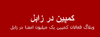
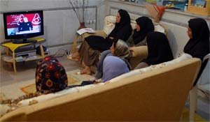

|
|
کمپین زابل به جمع کمپین یان پیوست
دو شنبه16 اردیبهشت 1387

تغییر برای برابری : سایت کمپین زابل توسط چند تن از فعالان کمپین راه اندازی شد و همزمان نخستین کارگاه کمپین در زابل برگزار گردید. درگزارش کمپین زابل آمده است :« در 14 اریبهشت اولین جلسه کارگاه کمپین در زابل با حضورده نفر از بانوان در منزل یکی از فعالان کمپین برگزار شد.در این جلسه پس از معرفی کمپین وتاریخچه آن و همچنین ضرورت آگاهی رسانی در مورد نابرابری های جنسیتی بحث و گفتگو در باره وضعیت زنان در این شهر معضلات و مشکلات همچنین ارائه راهکارهای فعالیت در این شهر صورت گرفت. پس از آن بخشی از فیلم های آموزشی کارگاه به نمایش در آمد.»

اعضای کمپین در زابل درباره موقعیت زنان در این شهر نیز سخن گفته اند:« زابل شهر بسیار سنتی و مردسالاریه که دخترا و زنان جرات نفس کشیدن ندارند.خشونت علیه زنان و اصولا خشونت در اینجا رتبه اول رو داره.زنان و دخترانی رو میبینی که با چاقو، چوب و مشت لگد تنبیه شدند.فکر میکنم تمامی تبعیضی که در این جزوه(جزوه حقوقی)به آن اشاره شده توسط مردان این سرزمین با کمال میل و رضایت انجام میشه.اصولا مردا توی اینجا خیلی حق به جانب هستند.»